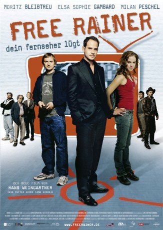

#10565 Free Rainer - Dein Fernseher lügt
 
 IMDB-Wertung: 6.7 / 10
IMDB-Wertung: 6.7 / 10  Metascore: 0
Metascore: 0 
Frustrated, because he is forced to produce bad TV-shows, a manager of a TV-station, enters the station and manipulates the ratings, to initiate a TV-revolution.
Jahr: 2007
Dauer: 124 Minuten
FSK: 12
Land: Österreich Studio: Kinowelt FilmverleihTonspuren:
Untertitel:
Auflösung: 1080p (1920x1080) Größe: 2488 MB
Genre: Drama, Komödie
Regisseur: Hans Weingartner
Drehbuch: Katharina Held, Hans Weingartner
Soundtrack: Adem Ilhan, Andreas Wodraschke
Darsteller:
 Moritz Bleibtreu als Rainer
Moritz Bleibtreu als Rainer Milan Peschel als Phillip
Milan Peschel als Phillip- Tom Jahn als Bernd
 Vinzenz Kiefer als Titanic Mann
Vinzenz Kiefer als Titanic Mann- Vanessa Wieduwilt als Frau Unfall
- Valentin Platareanu als Opa Pegah
 David Bredin als Assistent Rainer
David Bredin als Assistent Rainer- Eva Lorenzo als Assistentin Rainer
 Falk Rockstroh als Regisseur im Café
Falk Rockstroh als Regisseur im Café- Inga R. Kammerer als Frau im Garten
- Thorsten Feller als Kreativling 1
- Hans Weingartner als Kreativling 2
- Luisa Katharina Davids als Junge Frau Konferenz
- Lutz Herkenrath als Politker
 Andreas Lust als Björn (uncredited)
Andreas Lust als Björn (uncredited)- Daniela Trittner als Partygast (uncredited)
- Elsa Sophie Gambard als Pegah
- Gregor Bloéb als Maiwald
- Andreas Brandt als Karl-Heinz
- Robert Viktor Minich als Harry
- Ralf Knicker als Sebastian
- Irshad Panjatan als Gopal
- Simone Hanselmann als Anna
- Doris Golpashin als Showmoderatorin
- Peer Jäger als Gründgens
- Us Conradi als Frau Arnim
- Franziska Knuppe als Maiwalds Freundin
- Bruno Montani als Mann Unfall
- Jonas Laleman als Hooligan
- Moritz Udem als Hooligan
- Thorsten Wift als Hooligan
- Christin Henkel als Hostess Senderparty
- Heike Jonca als Rednerin
- Finja Martens als Schauspielerin
- Leyli Timner als Pegah als Kind
- Chiara Steinbauer als Mareike
- Valentin Ogris als Oliver
- Oliver Haller als Heiko
- Marc Potak als Thommy
- Robert Reifer als Warm Upper
- Christoph Schobesberger als Experte Superbabyshow
- Ines Selbmann als Moderatorin Katrin / Führung IMA
- Arne Fiedler als Sanitäter
- Carl Pirbil als OP Arzt Albtraum
- Emanuel Kastner als OP Arzt Albtraum
- Nadja Engel als Krankenschwester
- Till Sennhenn als Bühnenbildner
- Christine Weingartner als Sekretärin Rainer
- Alexander Tschernek als Moderator Wissensshow
- Mira Beham als Politologin
Datei: X:\2007(A-F)\Free Rainer - Dein Fernseher lügt (2007, FSK12, 1920x1080).mkv seit 21.01.2019
Festplatte: HD 2007(A-Z)-2008(A-F)
 Es gibt insgesamt 65 Filme in der Gruppe '2007(A-F)'
Es gibt insgesamt 65 Filme in der Gruppe '2007(A-F)'